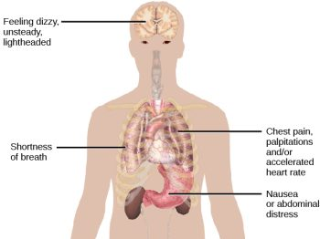

12.4: Anxiety
What is anxiety? Most of us feel some anxiety almost every day of our lives. Maybe you have an important upcoming test, presentation, big game, or date. Anxiety can be defined as a negative mood state that is accompanied by bodily symptoms such as increased heart rate, muscle tension, a sense of unease, and apprehension about the future (APA, 2013; Barlow, 2002) (Figure 5).

Anxiety disorders are characterized by excessive and persistent fear and anxiety, and by related disturbances in behavior (APA, 2013). While anxiety is universally experienced, anxiety disorders cause considerable distress. Anxiety disorders are common: approximately 25–30% of the U.S. population meets the criteria for at least one anxiety disorder during their lifetime (Kessler et al., 2005). Anxiety disorders affect more women than men; within a 12-month period, about 23% of women and 14% of men will experience an anxiety disorder (National Comorbidity Survey, 2007). Anxiety disorders are the most frequently occurring class of mental disorders and are often comorbid with each other and with other mental disorders (Kessler et al., 2009).[1]
While all anxiety disorders are characterized by excessive fear, anxiety, or avoidance behavior, they differ from one another in the types of objects or situations that provoke these responses (Bridley & Daffin, 2024). Some common anxiety disorders are:
- Generalized anxiety disorder (GAD)—an underlying excessive worry related to a wide range of events or activities and an inability to control that worry.
- Specific phobia—fear or anxiety specific to an object or a situation (e.g., animals, heights, water, needles, airplanes, elevators).
- Agoraphobia—intense fear of public situations or places where escape seems difficult
- Social anxiety disorder—fear or anxiety related to social situations, especially when evaluation by others is possible
- Panic disorder—series of unexpected panic attacks coupled with the fear of future panic attacks
Neural Mechanisms Underlying Anxiety Disorders
Anxiety disorders are associated with genetic factors and abnormalities in brain circuits that regulate and process emotion. Family and twin studies indicate that anxiety disorders have a moderate genetic heritability (~30-40%; making it less heritable than schizophrenia or bipolar disorder) (Hettema et al., 2001). Over 200 genes link to anxiety disorders, with distinct gene clusters for subtypes like generalized anxiety disorder, social anxiety disorder, and panic disorder. The identified genes are expressed in brain regions linked to anxiety and emotion processing, such as the basal ganglia, hippocampus, and amygdala (Karunakaran & Amemori, 2023).
The brain circuits underlying anxiety involve bottom-up signals from the amygdala that indicate the presence of potentially threatening stimuli, and top-down control mechanisms from the prefrontal cortex that signal the emotional salience of stimuli (Nuss, 2015). The amygdala is involved in triggering panic attacks through its central nucleus, which connects with brain structures (e.g. in the brainstem), that control autonomic functions such as respiration and heart rate. Animal studies have shown that electrically or pharmacologically stimulating the amygdala’s central nucleus produces behaviors associated with panic (Herdade et al., 2006). People with an anxiety disorder show hyperactive amygdala response to stimuli (Etkin & Wager, 2007). These bottom-up signals from the amygdala might be over-indicating the presence of potentially threatening stimuli. “Top-down” control originating from prefrontal areas can inhibit the amygdala to regulate emotion. However, people with anxiety disorders show reduced prefrontal activation (Etkin, 2010), and they require more prefrontal activation to successfully reduce negative emotions (Nuss, 2015).
Treatments of Anxiety Disorders
Research examining the role of neurotransmitters in anxiety-related circuits has focused largely on GABA, the primary inhibitory neurotransmitter in the brain that reduces neuronal excitability. Insufficient GABAergic inhibition of neurons might drive the amygdala hyperactivity seen in anxiety disorders. Therefore GABA receptors are a primary target for anti-anxiety medication. In animal studies, injecting GABA agonists (activators) into the amygdala (thereby activating the inhibitory neurons) decreased measures of fear and anxiety (Sanders & Shekhar, 1995). GABA receptors are modulated by drugs called benzodiazepines, such as well-known brand names like Valium, Xanax, and Ativan. Benzodiazepines bind to the GABAA receptors, which causes an influx of chloride (Cl–) ions. The increase of negative chloride ions hyperpolarizes the neuron’s membrane potential, thereby inhibiting it and making it less likely to fire. Through enhanced neuronal inhibition, benzodiazepines reduce amygdala reactivity to aversive stimuli and anxiety (Del-Ben et al., 2012).
Benzodiazepines were the primary anxiety treatment for decades. However, due to addiction risk and limited long-term efficacy, they’re now recommended only for short-term use (2-4 weeks). While GABA is an important target for modulating anxiety response in the amygdala, other neurotransmitters such as serotonin, endocannabinoids, and oxytocin, are also important. Current treatment guidelines for anxiety disorders now recommend antidepressants, including serotonin reuptake inhibitors (SSRIs) or serotonin–noradrenaline reuptake inhibitors (SNRIs) (Nuss, 2015).
Cognitive behavioral therapy (CBT) is a well-established non-pharmacological treatment for anxiety disorders and can reduce amygdala hyperactivation (Straube et al., 2006). Finally, even placebos have been shown to decrease anxiety; when individuals thought they received an anti-anxiety drug, some showed a lower anxiety response to emotional pictures. Their placebo response was associated with decreased amygdala activation, as well as increased activation in a modulatory system including the anterior cingulate and the prefrontal cortex (Petrovic et al., 2005). In sum, irrespective of the technique, reducing activity in the amygdala or increasing activity in emotion-regulating circuits can decrease anxiety. Ongoing research seeks to optimize how these networks can be targeted to manage anxiety.
Media Attributions
- Physical manifestations of a panic attack © OpenStax is licensed under a CC BY-NC-SA (Attribution NonCommercial ShareAlike) license
- This section contains material adapted from: Barlow, D. H. & Ellard, K. K. (2024). Anxiety and related disorders. In R. Biswas-Diener & E. Diener (Eds.), Noba textbook series: Psychology. Champaign, IL: DEF publishers. Retrieved from http://noba.to/xms3nq2c License: CC BY-NC-SA 4.0 DEED - Spielman, R. M., Jenkins, W. J., & Lovett, M. D. (2020). 15.4 Anxiety Disorders. In Psychology 2e. OpenStax. Access for free at https://openstax.org/books/psychology-2e/pages/15-4-anxiety-disorders License: CC BY 4.0 DEED. ↵
Intense, excessive, and persistent worry and fear about everyday situations. Linked to heightened physical sensations, such as fast heart rate, rapid breathing, sweating, and fatigue
A group of disorders that are characterized by excessive and persistent feelings of intense worry, fear, and dread, as well as physical sensations like increased blood pressure and fast heart rate
Spherical cell group located in the amygdala that is primarily responsible for the bodily reactions associated with fear